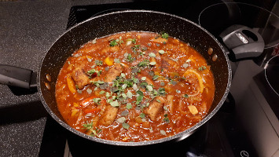
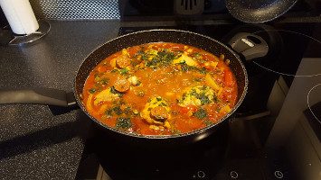
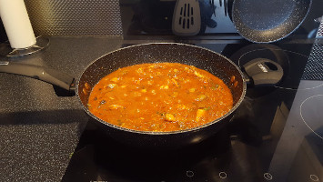
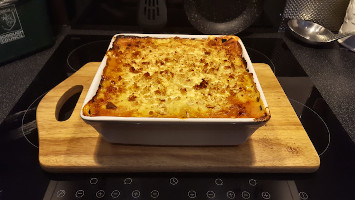
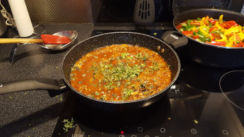
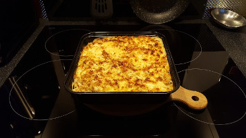
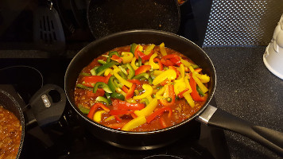
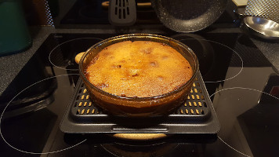
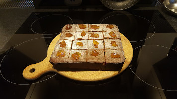
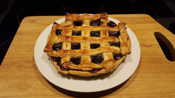

sausages
Such a versatile & in-expensive ingredient. I tend to use pork Cumberland or Lincolnshire, but please feel free to experiment with vegetarian or chicken sausages. With one exception, sausage & onion pie, I think that really needs pork sausage meat.

sausage & bean casserole
 sausage & penne pasta
sausage & penne pasta
 sausage & mash pie
sausage & mash pie
chicken
While contemplating cost, large packs of chicken thighs are excellent. Being time concious, if boneless chicken is required, I've bought it that way. If using chicken breast, cooking times will need to be reduced, so the chicken does not dry out while cooking.
 grandma's chicken soup
grandma's chicken soup

chicken chilli mexican

chicken & mushroom pasta

chicken & mushroom lasagne
 chicken & mushroom pie
chicken & mushroom pie
beef
Buying beef is more complicated as cheaper cuts require longer cooking times or need pressure cooking. So for now, please try my corned beef mash pie and beef & pasta sauce dishes while I work on more recipies for this type of meat.

beef & pork pasta sauce

beef & pork pasta bake

beef & pork Mexican chilli
pork
I tend to go for a shoulder cut, it has a lot more fat running through it, which keeps it moist, melt in your mouth tasty in any dish. Left over roast pork is particularly delicious as you have all those wonderful umami meatiness flavours baked right into the meat before you start.
 pork in creamy pepper sauce
pork in creamy pepper sauce
lamb
Lamb dishes, now we're talking..... From fragrant curries to warming stews, Sunday roasts to rich ragus. Lamb is a fabulous ingredient, higher in cost than other meats, but oh! so worth it every now and again!
 lamb and mash pie
lamb and mash pie
vege' bakes
Vegetables! As you might have noticed, feature heavily in my recipies, hiding in amongst lots of meat. Here they are the star! You can try them on a "veg hater" and I wish you luck with that :¬) But, healthwise, we should eat more, it's a fact. Cooked well and treated with love, they are the star indeed
 cauliflower cheese & beans bake
cauliflower cheese & beans bake
sauce
A lot of these sauces are used throughout my recipies. For now here's a couple to get us going, without a jar, sachet, chemical additive or flavouring in sight.
 ingredients NOT include!
ingredients NOT include!
 homemade cheese sauce
homemade cheese sauce
Puddings
Num num num! Time to polish off that meal, just to make sure everyone's had enough to eat :¬P

pineapple pudding upside down

Sticky Gingerbread Pud

black cherry lattice tart